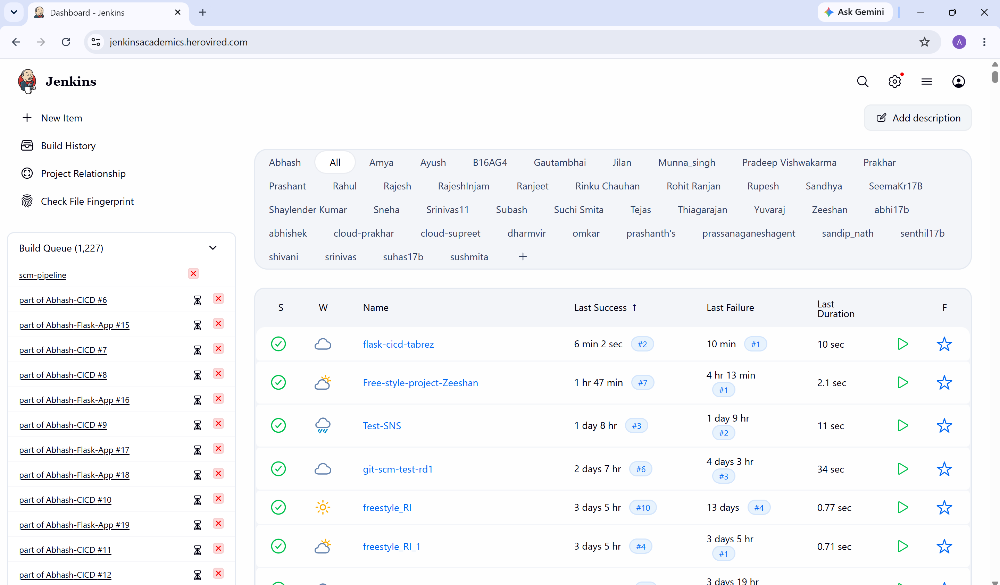
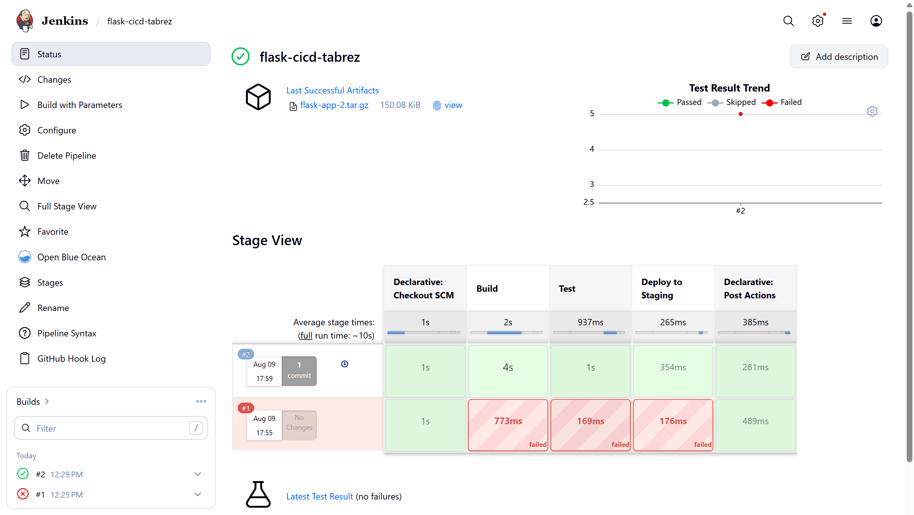
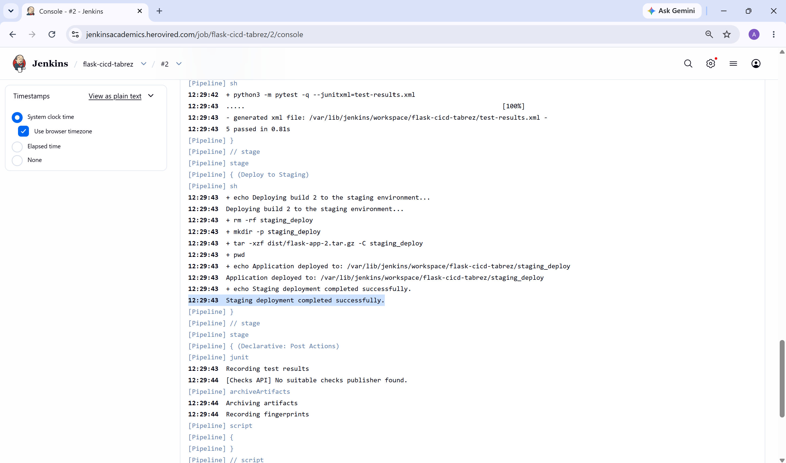
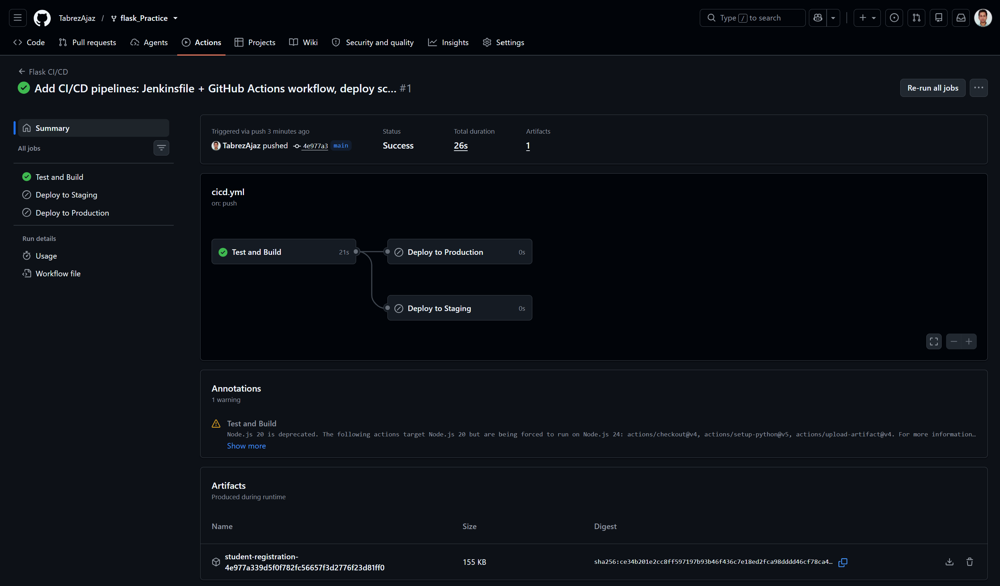
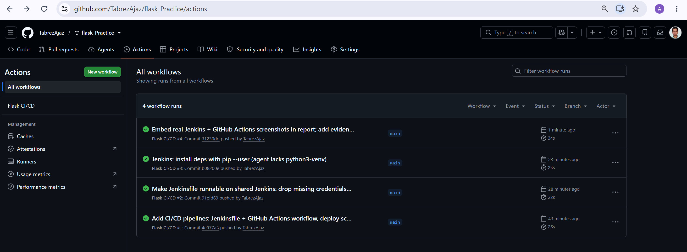

CI/CD Pipelines for a Flask Application
Jenkins and GitHub Actions implementations covering automated build, isolated testing, staged deployment, production releases, secrets, triggers, and notifications.
Executive Summary
This project starts from the assignment's provided public Flask repository and implements two independent but consistent CI/CD solutions. Both pipelines install dependencies, run five unit tests, package the application, and stop immediately when a test fails. Jenkins deploys successful main builds to staging and sends an email result. GitHub Actions deploys staging pushes to staging and annotated v* tags to production.
Source Repository
Provided application: github.com/mohanDevOps-arch/flask_Practice
Submission fork: github.com/TabrezAjaz/flask_Practice
1. Architecture and Application
Application
Python Flask CRUD application for student records. Flask-PyMongo connects to MongoDB in live environments. Gunicorn runs the deployed service behind a local port.
Test Isolation
The inherited tests required a real MongoDB daemon. They now inject mongomock.MongoClient, giving repeatable tests on Jenkins and GitHub-hosted runners.
Release Model
Each run creates student-registration.tar.gz. The server expands it into a numbered release, installs runtime dependencies, and atomically updates the current link.
Verification
After systemd restart, deployment calls http://127.0.0.1:8000/health. A non-200 response fails the deployment instead of reporting a false success.
Automated Tests
| Test | Behavior Verified |
|---|---|
| Home page | Returns HTTP 200 and renders seeded student data. |
| Health check | Returns HTTP 200 and a healthy JSON status. |
| Add student | Creates and displays a submitted record. |
| Update student | Modifies and displays an existing record. |
| Delete student | Removes a temporary student record. |
2. Jenkins CI/CD Pipeline
The root Jenkinsfile is a declarative pipeline. Jenkins checks out the fork from SCM and responds to GitHub push webhooks through githubPush().
| Stage | Implementation | Failure Behavior |
|---|---|---|
| Build | Create virtual environment, install requirements-dev.txt, and package a tar artifact. | Dependency or packaging error stops the run. |
| Test | Run pytest -q --junitxml=test-results.xml. | Any failed test blocks deployment. |
| Deploy to Staging | On main, bind SSH credentials and run the shared deployment script. | SSH, service restart, or health-check error fails the run. |
| Post | Publish JUnit, archive artifact, and send success/failure email through Email Extension. | Result remains visible in Jenkins even if notification is disabled. |
Required Jenkins Configuration
- Ubuntu VM with Java 21, Jenkins, Git, Python 3, and
python3-venv. - Plugins: Pipeline, Git, GitHub Integration, Credentials Binding, JUnit, and Email Extension.
- Secret text credential
staging-host. - SSH private-key credential
staging-ssh. - SMTP details in Extended E-mail Notification.
- GitHub webhook ending in
/github-webhook/, push events enabled.
NOTIFICATION_EMAIL supplies the recipient. The post success and post failure blocks send different subjects and include the build URL.Jenkins Evidence

flask-cicd-tabrez pipeline job (last build successful).

3. GitHub Actions CI/CD
The workflow is stored at .github/workflows/cicd.yml. It grants read-only repository permission, cancels superseded runs on the same reference, and uses environment-scoped secrets for deployment.
| Event | Jobs | Target |
|---|---|---|
Push to main | Test and Build | CI artifact only |
Pull request to main or staging | Test and Build | Validation only |
Push to staging | Test and Build, Deploy to Staging | GitHub staging environment |
Push tag matching v* | Test and Build, Deploy to Production | GitHub production environment |
| Manual dispatch | Test and Build | Diagnostic CI run |
Secrets and Variables
| Name | Storage | Purpose |
|---|---|---|
DEPLOY_HOST | Environment secret | Target VM hostname or public IP. |
DEPLOY_USER | Environment secret | Restricted SSH user. |
SSH_PRIVATE_KEY | Environment secret | Authentication key written with mode 600 during the job. |
APP_PATH | Environment variable | Deployment root, normally /opt/student-registration. |
APP_URL | Environment variable | Clickable environment URL in the deployment summary. |
Staging and production use the same variable names but different environment values. Production can require a reviewer, creating a manual approval gate without modifying workflow code.
GitHub Actions Evidence

main: the Test and Build job succeeded and produced the deployment artifact. Deploy to Staging and Deploy to Production appear skipped, which is the expected behaviour on a main push — they run only on a staging push or a v* release tag.
main completed successfully.4. Deployment Environment
The one-time scripts/install-service.sh installer creates the release directory and a systemd unit. Runtime secrets remain on the VM in /etc/student-registration.env.
sudo apt-get install -y python3 python3-venv curl bash scripts/install-service.sh /opt/student-registration "$USER" # /etc/student-registration.env (values omitted from Git) MONGO_URI=mongodb+srv://... SECRET_KEY=...
Deployment Sequence
- Confirm the build artifact exists.
- Copy it over SSH to a unique temporary path.
- Create a release directory using the CI run/build number.
- Extract source and create an isolated Python virtual environment.
- Install runtime-only dependencies.
- Update the
currentsymlink. - Restart only
student-registration.service. - Retry the health endpoint up to five times and fail if unavailable.
systemctl restart student-registration.5. Requirement Traceability
| Assignment Requirement | Implementation Evidence | Status |
|---|---|---|
| Fork and clone provided Flask repository | Fork created at github.com/TabrezAjaz/flask_Practice; all files committed and pushed to main. | Done |
| Jenkins Build: install dependencies | Jenkinsfile, Build stage | Implemented |
| Jenkins Test: pytest | JUnit-producing Test stage; five local tests pass. | Verified locally |
| Jenkins staging deployment | Conditional Deploy to Staging stage and shared SSH script. | Implemented |
| Push trigger on main | githubPush() plus documented webhook. | Implemented |
| Email success/failure | Email Extension calls in Jenkins post blocks. | Implemented |
| GitHub workflow directory and YAML | .github/workflows/cicd.yml | Validated |
| Install, test, and build jobs | test-and-build job and uploaded tar artifact. | Implemented |
| Staging branch deployment | Exact branch condition and staging environment. | Implemented |
| Production release-tag deployment | v* trigger, exact tag condition, and production environment. | Implemented |
| Secrets | Environment secrets for host, user, and private key; runtime secrets stay on server. | Documented |
| README documentation | Full setup, commands, secrets, triggers, and evidence guide. | Complete |
| Pipeline screenshots | Real Jenkins run (dashboard, green stages, passing tests) and GitHub Actions run embedded in sections 2 and 3. | Captured |
6. Verification and Troubleshooting
Completed Local Verification
pytest -q
..... [100%]
5 passed
bash -n scripts/deploy.sh scripts/install-service.sh
# exit code 0
python -c "import yaml; yaml.safe_load(open('.github/workflows/cicd.yml'))"
# parsed successfully
| Symptom | Likely Cause | Resolution |
|---|---|---|
| Jenkins job does not trigger | Webhook cannot reach port 8080 or URL lacks trailing path. | Allow inbound access, use /github-webhook/, and inspect Recent Deliveries. |
| Deploy stage cannot bind credentials | Credential IDs differ from the Jenkinsfile. | Create exact IDs staging-host and staging-ssh. |
| GitHub deploy job is skipped | Wrong branch/tag event. | Push the staging branch or a v* tag; manual runs intentionally perform CI only. |
| Permission denied restarting service | Restricted sudo rule missing. | Add the single-service sudoers rule and verify the systemctl path. |
| Health check fails | Bad Mongo URI, service environment, port, or dependency. | Run systemctl status and journalctl -u student-registration on the VM. |
| Tests try to reach MongoDB | Old upstream tests are running. | Confirm the fork contains the injected MONGO_TEST_CLIENT test fixture. |
7. Final Submission Checklist
- Use GitHub's Fork action for the provided repository under
TabrezAjaz. - Set the local
originto that fork and pushmain. - Create and push the
stagingbranch. - Configure the Jenkins credentials, SMTP, pipeline, and webhook.
- Create GitHub
stagingandproductionenvironments with secrets and variables. - Run Jenkins from a
mainpush and save all Jenkins screenshots. - Push
staging, then push av1.0.0tag and save GitHub Actions screenshots. - Add screenshots under
docs/screenshots, commit, and push. - Open this report and print to PDF if required by Vlearn.
- Submit
GitHub Repository Link - CI CD Pipeline.txt.